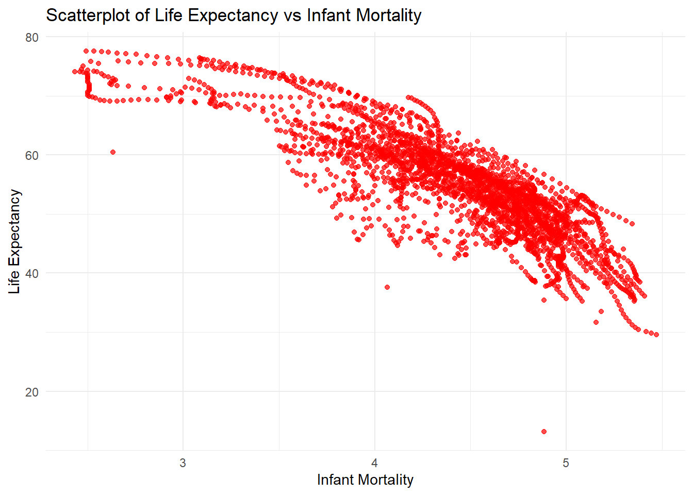
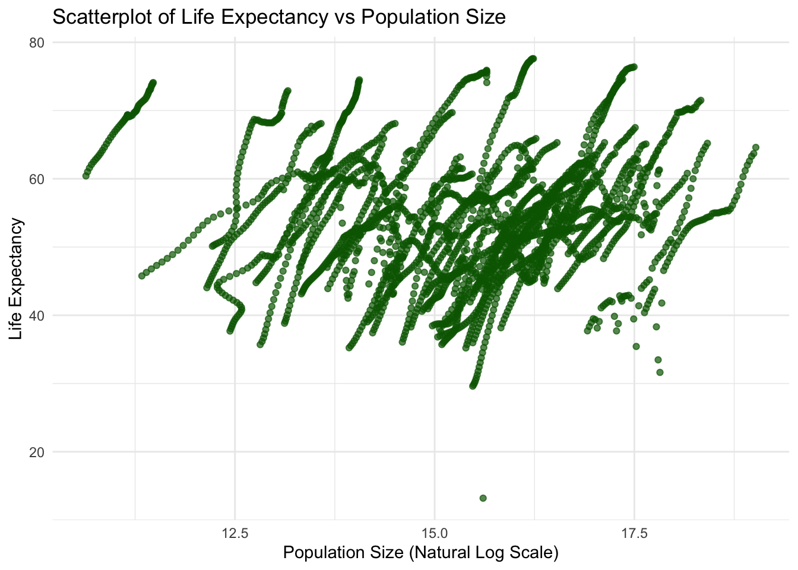
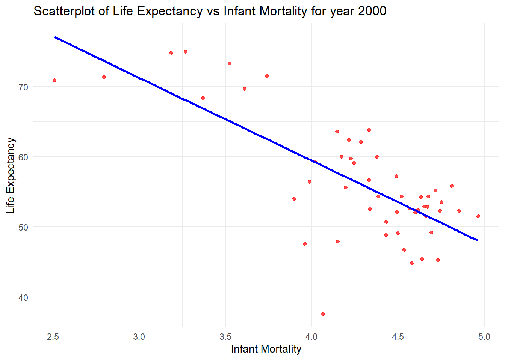
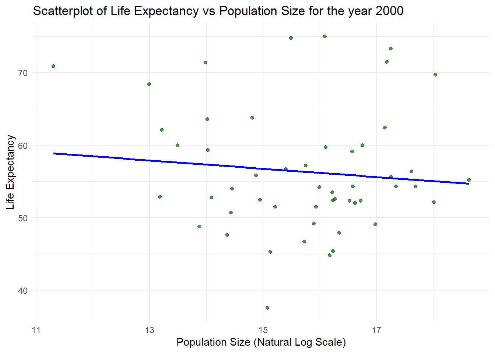
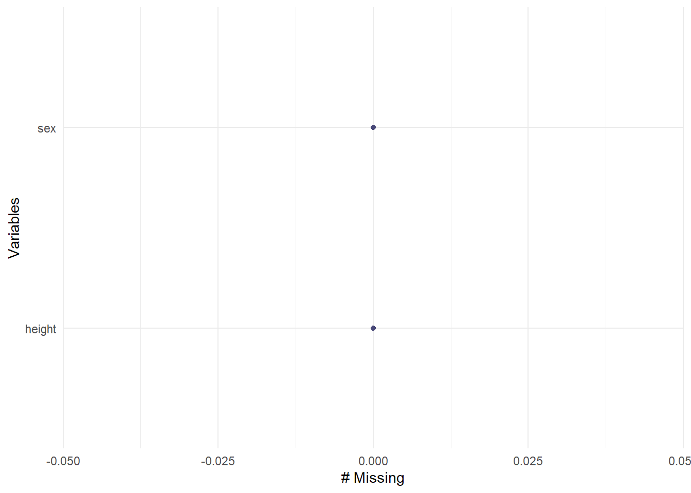
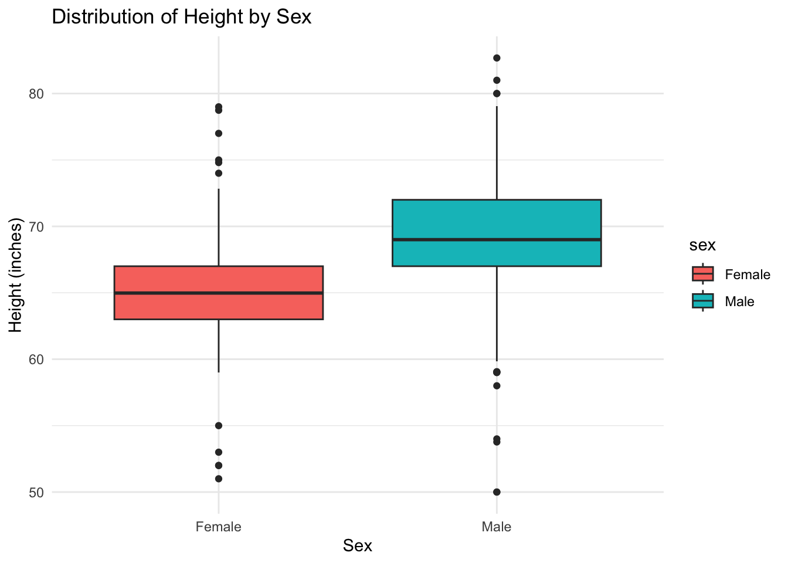

Warning: package 'stringr' was built under R version 4.4.3R Coding Exercise
Placeholder file for the future R coding exercise.
1 Data Aquisition
In this section we will acquire data from gapminder, and have an initial look at it.
help(gapminder) #looking a the help file for gapminder datastarting httpd help server ... donestr(gapminder) # getting an overview of the data structire'data.frame': 10545 obs. of 9 variables:
$ country : Factor w/ 185 levels "Albania","Algeria",..: 1 2 3 4 5 6 7 8 9 10 ...
$ year : int 1960 1960 1960 1960 1960 1960 1960 1960 1960 1960 ...
$ infant_mortality: num 115.4 148.2 208 NA 59.9 ...
$ life_expectancy : num 62.9 47.5 36 63 65.4 ...
$ fertility : num 6.19 7.65 7.32 4.43 3.11 4.55 4.82 3.45 2.7 5.57 ...
$ population : num 1636054 11124892 5270844 54681 20619075 ...
$ gdp : num NA 1.38e+10 NA NA 1.08e+11 ...
$ continent : Factor w/ 5 levels "Africa","Americas",..: 4 1 1 2 2 3 2 5 4 3 ...
$ region : Factor w/ 22 levels "Australia and New Zealand",..: 19 11 10 2 15 21 2 1 22 21 ...summary(gapminder) # getting a summary of the gapminder dataset country year infant_mortality life_expectancy
Albania : 57 Min. :1960 Min. : 1.50 Min. :13.20
Algeria : 57 1st Qu.:1974 1st Qu.: 16.00 1st Qu.:57.50
Angola : 57 Median :1988 Median : 41.50 Median :67.54
Antigua and Barbuda: 57 Mean :1988 Mean : 55.31 Mean :64.81
Argentina : 57 3rd Qu.:2002 3rd Qu.: 85.10 3rd Qu.:73.00
Armenia : 57 Max. :2016 Max. :276.90 Max. :83.90
(Other) :10203 NA's :1453
fertility population gdp continent
Min. :0.840 Min. :3.124e+04 Min. :4.040e+07 Africa :2907
1st Qu.:2.200 1st Qu.:1.333e+06 1st Qu.:1.846e+09 Americas:2052
Median :3.750 Median :5.009e+06 Median :7.794e+09 Asia :2679
Mean :4.084 Mean :2.701e+07 Mean :1.480e+11 Europe :2223
3rd Qu.:6.000 3rd Qu.:1.523e+07 3rd Qu.:5.540e+10 Oceania : 684
Max. :9.220 Max. :1.376e+09 Max. :1.174e+13
NA's :187 NA's :185 NA's :2972
region
Western Asia :1026
Eastern Africa : 912
Western Africa : 912
Caribbean : 741
South America : 684
Southern Europe: 684
(Other) :5586 class(gapminder) # obtaining the type of object gapminder is[1] "data.frame"We can confirm that gapminder is a dataframe.
2 Data Cleaning
Next, we will extract the data required for our excercise from the vast dataset of gapminder
africadata <- gapminder %>% filter(continent == "Africa") #filtering african countries to make a new dataset
str(africadata) # getting an overview of the data structire of africadata'data.frame': 2907 obs. of 9 variables:
$ country : Factor w/ 185 levels "Albania","Algeria",..: 2 3 18 22 26 27 29 31 32 33 ...
$ year : int 1960 1960 1960 1960 1960 1960 1960 1960 1960 1960 ...
$ infant_mortality: num 148 208 187 116 161 ...
$ life_expectancy : num 47.5 36 38.3 50.3 35.2 ...
$ fertility : num 7.65 7.32 6.28 6.62 6.29 6.95 5.65 6.89 5.84 6.25 ...
$ population : num 11124892 5270844 2431620 524029 4829291 ...
$ gdp : num 1.38e+10 NA 6.22e+08 1.24e+08 5.97e+08 ...
$ continent : Factor w/ 5 levels "Africa","Americas",..: 1 1 1 1 1 1 1 1 1 1 ...
$ region : Factor w/ 22 levels "Australia and New Zealand",..: 11 10 20 17 20 5 10 20 10 10 ...summary(africadata) # geting a summary of africadata country year infant_mortality life_expectancy
Algeria : 57 Min. :1960 Min. : 11.40 Min. :13.20
Angola : 57 1st Qu.:1974 1st Qu.: 62.20 1st Qu.:48.23
Benin : 57 Median :1988 Median : 93.40 Median :53.98
Botswana : 57 Mean :1988 Mean : 95.12 Mean :54.38
Burkina Faso: 57 3rd Qu.:2002 3rd Qu.:124.70 3rd Qu.:60.10
Burundi : 57 Max. :2016 Max. :237.40 Max. :77.60
(Other) :2565 NA's :226
fertility population gdp continent
Min. :1.500 Min. : 41538 Min. :4.659e+07 Africa :2907
1st Qu.:5.160 1st Qu.: 1605232 1st Qu.:8.373e+08 Americas: 0
Median :6.160 Median : 5570982 Median :2.448e+09 Asia : 0
Mean :5.851 Mean : 12235961 Mean :9.346e+09 Europe : 0
3rd Qu.:6.860 3rd Qu.: 13888152 3rd Qu.:6.552e+09 Oceania : 0
Max. :8.450 Max. :182201962 Max. :1.935e+11
NA's :51 NA's :51 NA's :637
region
Eastern Africa :912
Western Africa :912
Middle Africa :456
Northern Africa :342
Southern Africa :285
Australia and New Zealand: 0
(Other) : 0 2.1 Creating new dataset: “one” and “two”
# selecting the required variables to create a new dataset named one
one <- africadata %>% select(infant_mortality, life_expectancy)
str(one) # obtaining the information about the structure of one'data.frame': 2907 obs. of 2 variables:
$ infant_mortality: num 148 208 187 116 161 ...
$ life_expectancy : num 47.5 36 38.3 50.3 35.2 ...summary(one) # summarizing the details about one infant_mortality life_expectancy
Min. : 11.40 Min. :13.20
1st Qu.: 62.20 1st Qu.:48.23
Median : 93.40 Median :53.98
Mean : 95.12 Mean :54.38
3rd Qu.:124.70 3rd Qu.:60.10
Max. :237.40 Max. :77.60
NA's :226 two <- africadata %>% select(population, life_expectancy) # creating another dataset with only two variables as listed
str(two) # obtaining the information about the structure of two'data.frame': 2907 obs. of 2 variables:
$ population : num 11124892 5270844 2431620 524029 4829291 ...
$ life_expectancy: num 47.5 36 38.3 50.3 35.2 ...summary(two) # obtaining the summary about the dataset two population life_expectancy
Min. : 41538 Min. :13.20
1st Qu.: 1605232 1st Qu.:48.23
Median : 5570982 Median :53.98
Mean : 12235961 Mean :54.38
3rd Qu.: 13888152 3rd Qu.:60.10
Max. :182201962 Max. :77.60
NA's :51 3 Data Visualization
We will now visualize the data using multiple figures.
3.1 Figure1: Scatterplot of Life Expectancy vs Infant Mortality
We observe that the life expectancy is going down as the infant mortality increases for the country, this could be because the health infrastructure that is unable to provide support to infant population might also not be able to support the general population. The streaks of data represent individual countries, most of the streaks seem to be heading downwards, and the overall tendency is also downwards implying negative correlation.
# Creating scatterplot with infant mortality on x-axis and life expectancy on y-axis
ggplot(one, aes(x = log(infant_mortality), y = life_expectancy)) + #setting variables to different axis
geom_point(color = "red", alpha = 0.7) +
labs(
title = "Scatterplot of Life Expectancy vs Infant Mortality", # giving a title to the figure
x = "Infant Mortality", #labeling the axis
y = "Life Expectancy" #labeling the axis
) +
theme_minimal()Warning: Removed 226 rows containing missing values or values outside the scale range
(`geom_point()`).
3.2 Figure 2: Scatterplot of Life Expectancy vs Population Size
We observe the life expectancy is going up as the country is more populated, this could be because more populated countries in Africa are more developed in health sectors and able to prove health support. The streaks of data represent individual countries, most of the streaks seem to be heading upwards, and the overall tendency is also upwards implying positive correlation.
# Create scatterplot with regression line
ggplot(two, aes(x = log(population), y = life_expectancy)) + #setting variables to different axis
geom_point(color = "darkgreen", alpha = 0.7) +
labs(
title = "Scatterplot of Life Expectancy vs Population Size", # giving a title to the figure
x = "Population Size (Natural Log Scale)", #labeling the axis
y = "Life Expectancy" #labeling the axis
) +
theme_minimal()Warning: Removed 51 rows containing missing values or values outside the scale range
(`geom_point()`).
3.3 Table 1: Summary of missing values for infant mortality
# Calculating the number of missing values for infant_mortality by grouping them according to year
missing_data_summary <- africadata %>% group_by(year) %>% summarize( missing_infant_mortality = sum(is.na(infant_mortality)), #gives us total missing values
total_observations = n(), #gives us total observations
)
# printing the result to have a look
print(missing_data_summary)# A tibble: 57 × 3
year missing_infant_mortality total_observations
<int> <int> <int>
1 1960 10 51
2 1961 17 51
3 1962 16 51
4 1963 16 51
5 1964 15 51
6 1965 14 51
7 1966 13 51
8 1967 11 51
9 1968 11 51
10 1969 7 51
# ℹ 47 more rowsWe will create a new dataset based on the data from year 2000 only.
data_2000 <- africadata %>% filter(year == 2000) # setting filter as year 2000 to be used to create the new dataset
str(data_2000)'data.frame': 51 obs. of 9 variables:
$ country : Factor w/ 185 levels "Albania","Algeria",..: 2 3 18 22 26 27 29 31 32 33 ...
$ year : int 2000 2000 2000 2000 2000 2000 2000 2000 2000 2000 ...
$ infant_mortality: num 33.9 128.3 89.3 52.4 96.2 ...
$ life_expectancy : num 73.3 52.3 57.2 47.6 52.6 46.7 54.3 68.4 45.3 51.5 ...
$ fertility : num 2.51 6.84 5.98 3.41 6.59 7.06 5.62 3.7 5.45 7.35 ...
$ population : num 31183658 15058638 6949366 1736579 11607944 ...
$ gdp : num 5.48e+10 9.13e+09 2.25e+09 5.63e+09 2.61e+09 ...
$ continent : Factor w/ 5 levels "Africa","Americas",..: 1 1 1 1 1 1 1 1 1 1 ...
$ region : Factor w/ 22 levels "Australia and New Zealand",..: 11 10 20 17 20 5 10 20 10 10 ...summary(data_2000) country year infant_mortality life_expectancy
Algeria : 1 Min. :2000 Min. : 12.30 Min. :37.60
Angola : 1 1st Qu.:2000 1st Qu.: 60.80 1st Qu.:51.75
Benin : 1 Median :2000 Median : 80.30 Median :54.30
Botswana : 1 Mean :2000 Mean : 78.93 Mean :56.36
Burkina Faso: 1 3rd Qu.:2000 3rd Qu.:103.30 3rd Qu.:60.00
Burundi : 1 Max. :2000 Max. :143.30 Max. :75.00
(Other) :45
fertility population gdp continent
Min. :1.990 Min. : 81154 Min. :2.019e+08 Africa :51
1st Qu.:4.150 1st Qu.: 2304687 1st Qu.:1.274e+09 Americas: 0
Median :5.550 Median : 8799165 Median :3.238e+09 Asia : 0
Mean :5.156 Mean : 15659800 Mean :1.155e+10 Europe : 0
3rd Qu.:5.960 3rd Qu.: 17391242 3rd Qu.:8.654e+09 Oceania : 0
Max. :7.730 Max. :122876723 Max. :1.329e+11
region
Eastern Africa :16
Western Africa :16
Middle Africa : 8
Northern Africa : 6
Southern Africa : 5
Australia and New Zealand: 0
(Other) : 0 3.4 Figure 3: Infant mortality vs life expectancy scatterplot for year 2000
The figure shows the scatterplot with a regression line to analyze the correlation more easily.
ggplot(data_2000, aes(x = log(infant_mortality), y = life_expectancy)) + #setting variables to different axis
geom_point(color = "red", alpha = 0.7) + geom_smooth(method = "lm", color = "blue", se = FALSE) +
labs(
title = "Scatterplot of Life Expectancy vs Infant Mortality for year 2000", # giving a title to the figure
x = "Infant Mortality", #labeling the axis
y = "Life Expectancy" #labeling the axis
) +
theme_minimal()`geom_smooth()` using formula = 'y ~ x'
3.5 Figure 4: Infany mortality vs population catterplot for year 2000
The figure shows the scatterplot with a regression line to analyze the correlation more easily.
ggplot(data_2000, aes(x = log(population), y = life_expectancy)) + #setting variables to different axis
geom_point(color = "darkgreen", alpha = 0.7) + geom_smooth(method = "lm", color = "blue", se = FALSE) +
labs(
title = "Scatterplot of Life Expectancy vs Population Size for the year 2000", # giving a title to the figure
x = "Population Size (Natural Log Scale)", #labeling the axis
y = "Life Expectancy" #labeling the axis
) +
theme_minimal()`geom_smooth()` using formula = 'y ~ x'
4 Linear model
4.1 Fitting the linear model
The two linear models are as follow
# Fit the linear model
fit1 <- lm(life_expectancy ~ infant_mortality, data = data_2000) # fit1 is a model with infant mortality as predictor
fit2 <- lm(life_expectancy ~ log(population), data = data_2000) # fit2 is a model with log(population) as predictorThe relation between life expectancy and infant mortality is statistically significand, with negative correlation. The relation between life expectancy and population is not statistically significant.
4.2 Summarizing the fitting result
The summary of the two linear models are provided below.
# View the summary of the model
summary(fit1) #summary of the fit1 model
Call:
lm(formula = life_expectancy ~ infant_mortality, data = data_2000)
Residuals:
Min 1Q Median 3Q Max
-22.6651 -3.7087 0.9914 4.0408 8.6817
Coefficients:
Estimate Std. Error t value Pr(>|t|)
(Intercept) 71.29331 2.42611 29.386 < 2e-16 ***
infant_mortality -0.18916 0.02869 -6.594 2.83e-08 ***
---
Signif. codes: 0 '***' 0.001 '**' 0.01 '*' 0.05 '.' 0.1 ' ' 1
Residual standard error: 6.221 on 49 degrees of freedom
Multiple R-squared: 0.4701, Adjusted R-squared: 0.4593
F-statistic: 43.48 on 1 and 49 DF, p-value: 2.826e-08summary(fit2) #summary of the fit2 model
Call:
lm(formula = life_expectancy ~ log(population), data = data_2000)
Residuals:
Min 1Q Median 3Q Max
-19.113 -4.809 -1.554 3.907 18.863
Coefficients:
Estimate Std. Error t value Pr(>|t|)
(Intercept) 65.3243 12.5203 5.217 3.65e-06 ***
log(population) -0.5711 0.7943 -0.719 0.476
---
Signif. codes: 0 '***' 0.001 '**' 0.01 '*' 0.05 '.' 0.1 ' ' 1
Residual standard error: 8.502 on 49 degrees of freedom
Multiple R-squared: 0.01044, Adjusted R-squared: -0.009755
F-statistic: 0.517 on 1 and 49 DF, p-value: 0.4755This section is contributed by DOREEN KIBUULE KALEMBE.
In this section, we will acquire data from heights.
library(dslabs)
help(heights)
# View the structure of the dataset
str(heights)'data.frame': 1050 obs. of 2 variables:
$ sex : Factor w/ 2 levels "Female","Male": 2 2 2 2 2 1 1 1 1 2 ...
$ height: num 75 70 68 74 61 65 66 62 66 67 ...# View the first few rows of the dataset
head(heights) sex height
1 Male 75
2 Male 70
3 Male 68
4 Male 74
5 Male 61
6 Female 65The data set includes men and women that reported their heights in inches. We are going to explore this data set and see what we can come up with.
We are going to assign the data set a name. Lets say heights_data.
library(naniar) # this package will help us know where there are any missing values in the data
heights_data<-heights
gg_miss_var(heights_data)# this is helping us check for any na variables in the data set.
pct_complete(heights_data) # the data is 100 percent complete.[1] 100sum(is.na(heights_data))# checks for missing values in the data set[1] 0The data show that there are no missing values in the dataset and the data is 100 percent complete.
Lets try to get the summary/descriptitive statistics of the data.
library(tidyverse)
library(dplyr)
# Calculate descriptive statistics for height by gender
heights_summary <- heights_data %>%
group_by(sex) %>% # Group data by gender
summarise(
count = n(), # Count of observations
mean_height = mean(height, na.rm = TRUE), # Mean height
median_height = median(height, na.rm = TRUE), # Median height
sd_height = sd(height, na.rm = TRUE), # Standard deviation
min_height = min(height, na.rm = TRUE), # Minimum height
max_height = max(height, na.rm = TRUE) # Maximum height
)
heights_summary# A tibble: 2 × 7
sex count mean_height median_height sd_height min_height max_height
<fct> <int> <dbl> <dbl> <dbl> <dbl> <dbl>
1 Female 238 64.9 65.0 3.76 51 79
2 Male 812 69.3 69 3.61 50 82.7Our summary statistics show that the shortest person male is 50 while the shortest woman is 51 inches. On average, men are taller than women.
Lets try to visualise the data.
#Compare the distribution of height for each sex
ggplot(data = heights_data, aes(x = sex, y = height, fill = sex)) +
geom_boxplot() +
labs(
title = "Distribution of Height by Sex",
x = "Sex",
y = "Height (inches)"
) +
theme_minimal()
From our results above, we can make a simple linear regression between sex and height.In this model, height is the dependent variable and sex (categorical variable: “Male” or “Female”) is the independent variable.
Linear_model<-lm(height ~ sex, data = heights_data)
summary(Linear_model)
Call:
lm(formula = height ~ sex, data = heights_data)
Residuals:
Min 1Q Median 3Q Max
-19.3148 -2.3148 -0.3148 2.6852 14.0606
Coefficients:
Estimate Std. Error t value Pr(>|t|)
(Intercept) 64.9394 0.2363 274.82 <2e-16 ***
sexMale 4.3753 0.2687 16.28 <2e-16 ***
---
Signif. codes: 0 '***' 0.001 '**' 0.01 '*' 0.05 '.' 0.1 ' ' 1
Residual standard error: 3.645 on 1048 degrees of freedom
Multiple R-squared: 0.2019, Adjusted R-squared: 0.2012
F-statistic: 265.1 on 1 and 1048 DF, p-value: < 2.2e-16Our results show that the average height of females which is our reference group is 64.94inches.
sexMale (Estimate = 4.3753): This result represents the difference in average height between males and females.Males are, on average, 4.3753 inches taller than females.
Both the intercept and the coefficient for sexMale have p-values < 2e-16, meaning they are highly statistically significant (p < 0.0001).This indicates that the difference in height between males and females is unlikely to be due to random chance.